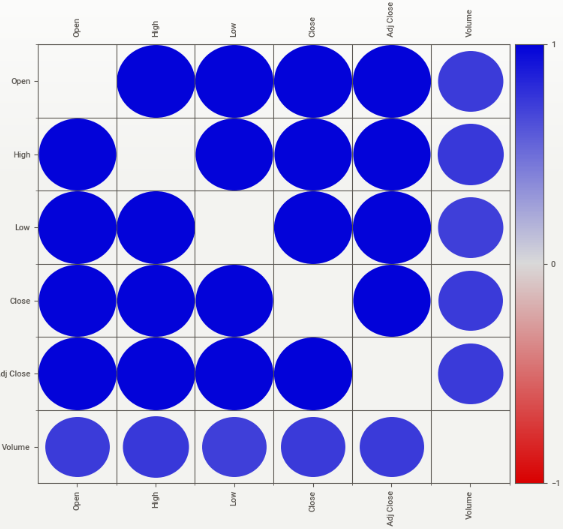
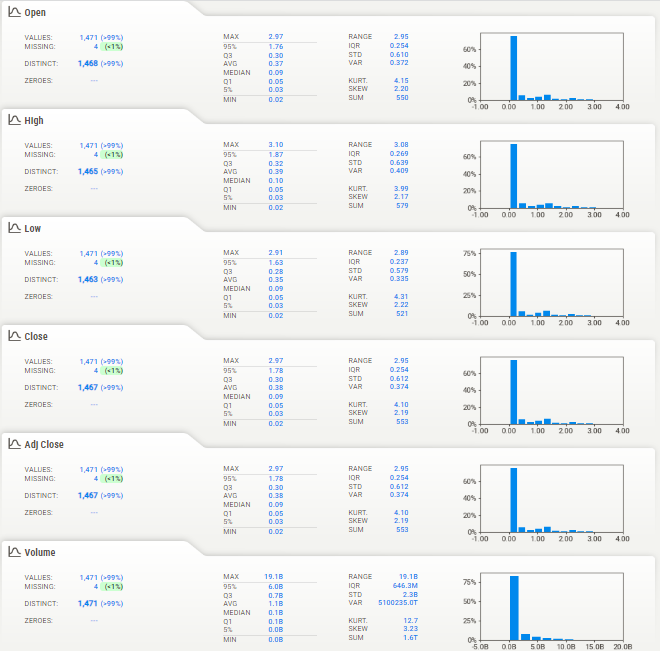

Cardano USD (ADA-USD)#
Datos#
Cargue de datos#
Los datos los utilizados para este estudio, se encuentra en linea en el siguiente link: “https://raw.githubusercontent.com/lihkir/Uninorte/main/AppliedStatisticMS/DataVisualizationRPython/Lectures/Python/PythonDataSets/ADA-USD.csv”. Por lo que se procede a importar los datos con el siguiente código.
import pandas as pd
# Cargar los datos desde el archivo CSV
url = "https://raw.githubusercontent.com/lihkir/Uninorte/main/AppliedStatisticMS/DataVisualizationRPython/Lectures/Python/PythonDataSets/ADA-USD.csv"
df = pd.read_csv(url) #Asignamos una variable para leer los datos
Organización de datos#
Dado que los datos obtenidos tiene una columan de fechas pero no tienen el formato correspondiente, se procede a cambiar este formato.
# Convertir la columna de fechas a un formato de fecha
df['Date'] = pd.to_datetime(df['Date'])
Visualización de datos#
Candlestick#
Se visualiza los datos medicante un gráfico tipo Candlestick, también conocido como gráfico de velas, ya que se está analizando datos financieros con un período de tiempo y muestra la apertura, el cierre, el máximo y el mínimo de un activo financiero. De esta forma, es una herramienta esencial en el análisis financiero.
# Crear un gráfico de candlestick
import mplfinance as mpf
import matplotlib.pyplot as plt
mpf.plot(df.set_index('Date'), type='candle', style='charles', title="Cardano (ADA-USD) Candlestick Chart")
plt.show()
C:\Users\Sandra\anaconda3\envs\tarea1_venv\lib\site-packages\mplfinance\_arg_validators.py:84: UserWarning:
=================================================================
WARNING: YOU ARE PLOTTING SO MUCH DATA THAT IT MAY NOT BE
POSSIBLE TO SEE DETAILS (Candles, Ohlc-Bars, Etc.)
For more information see:
- https://github.com/matplotlib/mplfinance/wiki/Plotting-Too-Much-Data
TO SILENCE THIS WARNING, set `type='line'` in `mpf.plot()`
OR set kwarg `warn_too_much_data=N` where N is an integer
LARGER than the number of data points you want to plot.
================================================================
warnings.warn('\n\n ================================================================= '+
En este gráfico se puede evidenciar datos por fecha, donde cada vela muestra el precio de apertura, el precio de cierre, el precio más alto y el precio más bajo durante este período específico. Si el cuerpo de la vela es verde, significa que los precios subieron durante ese período, y si es rojo, bajaron. Las mechas arriba y abajo de la vela dicen cuánto variaron los precios. Podemos usar estos gráficos para detectar tendencias y patrones que pueden ser de ayuda en la toma decisiones de inversión.
EDA#
Hacemos un analisis exploratorio para examinar el conjunto de datos de forma preliminar y para resumir sus características principales, identificar patrones, detectar valores atípicos y entender su estructura antes de realizar análisis o modelado más avanzado. Involucra la visualización de datos, cálculo de estadísticas descriptivas y la búsqueda de relaciones o tendencias para obtener una comprensión inicial de la información contenida en los datos. Para esto, ejecutamos el siguiente código.
pip install sweetviz
import sweetviz as sv
report = sv.analyze(df)
report.show_html('report.html') # Generar un informe HTML
C:\Users\Sandra\anaconda3\envs\tarea1_venv\lib\site-packages\sweetviz\from_profiling_pandas.py:65: FutureWarning: is_categorical_dtype is deprecated and will be removed in a future version. Use isinstance(dtype, CategoricalDtype) instead
if pd.api.types.is_categorical_dtype(keys):
Report report.html was generated! NOTEBOOK/COLAB USERS: the web browser MAY not pop up, regardless, the report IS saved in your notebook/colab files.
Generalidades#
Podemos revisar todos los datos de forma conjunta para tener una visión integral de la información que se está manejando
Datos#
Del Dataframe podemos evidenciar que tenemos 7 variables, 6 de ellad corresponden a variables de tipo numerico y sólo una de ellas corresponde a texto. Esto tiene sentido, ya que esta última corresponde a “Date” que son las fechas de cada uno de los datos. Mientras que las demas variables si indican un medición puntual.
Correlación#
Por otro lado, podemos evidenciar que casi todas las variables estudiadas presenta una alta correlación entre ellas, a excepcion del volumen que demuestra un poco menos de correlación con las demás variables. Esto puede dar indicios de variables que se pueden excluir de un posible estudio dado que unas representan el comportamiento de la otra. A manera de un ejemplo especifico tenemos la variable “Open” que se encuentra fuertemente correlacionada con las variables “High”, “Low”, “Close”, “Adj Close”. Pero se encuentra un poco menos correlacionada con la variable “Volume”. Esto se evidencia en el siguiente gráfico.

Figura 1. Gráfico de correlación
Variables#
Se revisan los datos registrados en cada una de las variables

Figura 2. Análisis exploratorio de variables
Open#
Se puede evidenciar que el valor más alto y más bajo de la variable “Open” corresponde a 2.97 y 0.03 respectivamente. Asimismo, que el 95% de los datos para esta variable tienen un valor igual o inferior a 1.76, lo que supone que hay pocos valores con un valor superior a este. Por otro lado, el valor promedio en promedio de los datos es 0.37. Estos estadísticos resumen la distribución de la variable “Open”, lo que te permite comprender la gama e intevalo de valores que toma [0.03 , 2.97], la tendencia central (promedio:0.37 y mediana:0.09) y la posición relativa de ciertos percentiles clave en la distribución de datos.
High#
Los resultados muestran que la variable “High” tiene un rango que va desde 0.02 hasta 3.10, con la mayoría de los datos (el 95%) por debajo de 1.87, indicando una concentración de valores más bajos. El valor promedio de la variable es aproximadamente 0.39.
Low#
En cuanto a los estadísticos de la variable “Low”, el valor máximo es 2.91, que representa el punto más alto de los datos, mientras que el valor mínimo es 0.02, que es el punto más bajo registrado. El valor 95% es 1.63, lo que indica que el 95% de los datos son igual o inferiores a este valor, proporcionando una comprensión de la mayoría de los datos. El tercer cuartil (Q3) es 0.28, lo que significa que el 75% de los datos tienen un valor igual o inferior a este número. El promedio (AVG) es 0.35, representando el valor típico de la variable. La mediana es 0.09, lo que implica que el 50% de los datos son igual o inferiores a este valor. El valor 5% es 0.03, lo que señala que solo el 5% de los datos superan este umbral y lo que nos puede dar indicios de valores atípicos o muy bajos en la distribución.
Close y Adj close#
Con respecto a la variable “Close” y la variable “Adj close”, el valor más alto alcanza 2.97,mientras que el más bajo es 0,02. La mayoría de los datos (el 95%) se encuentra por debajo de 1.78, que es el valor 95%. El tercer cuartil (Q3) se ubica en 0.30, lo que significa que el 75% de los datos son igual o más bajos. El valor promedio (AVG) es 0.38 y la mediana está en 0.09, lo que indica que la mitad de los datos son menores a este valor. El valor 5% es 0.03, lo que podría señalar valores atípicos o muy bajos. Estos datos nos ayudan a entender cómo se distribuye estás variables. Cabe resaltar que los datos obtenidos en ambas variables son iguales, lo que podría señalar alguna información sobre correlación. Esto se sustenta con el gráfico de correlacion donde vemos que estás dos variables tienen una alta correlación.
Volumen#
Los datos muestran que el valor máximo de volumen alcanza 19.1 mil millones. Además, el 95% de los datos se encuentra por debajo de 6.0 mil millones, lo que significa que la mayoría de las observaciones tienen un volumen menor. El tercer cuartil (Q3) está en 0.7 mil millones, lo que indica que el 75% de los datos tienen un volumen igual o menor. El promedio (AVG) es de 1.1 mil millones, y la mediana es de 0.1 mil millones, lo que sugiere que la mitad de los datos tienen un volumen igual o menor a este valor. El primer cuartil (Q1) es 0.1 mil millones, y el valor 5% es 0.00 mil millones, lo que podría indicar que hay algunas observaciones con volúmenes muy bajos. En resumen, estos estadísticos nos dan una idea de cómo se distribuye el volumen, con la mayoría de los valores por debajo de 6.0 mil millones y un rango que va desde 0.00 mil millones hasta 19.1 mil millones.